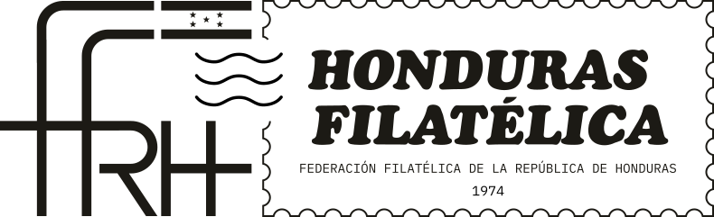

05
Textura & imagen
El detalle macro del grabado como material principal — presentado como láminas de gabinete.


La marca oculta en el papel, revelada a contraluz.
Un archivo vivo de la filatelia hondureña — el sello como puerta a la historia. Vocabulario visual construido sobre el grabado en talla dulce: la técnica que dio a estampillas y billetes su textura inconfundible.
Limpio y elegante. Papel, tinta y luz. Líneas de seguridad, tramas cruzadas y filigranas que solo se leen de cerca.
Filigrana es la marca de agua escondida en el papel del sello: el signo secreto que prueba lo auténtico, visible solo a contraluz.
La identidad nace de la talla dulce (intaglio) — el grabado a buril que hunde la línea en la placa y deja tinta en relieve sobre el papel. Es el lenguaje del billete, del certificado y de la estampilla clásica: líneas finísimas, tramas cruzadas, punteados y guilloché.
El tono es de catálogo de gabinete: sobrio, táctil, generoso en aire. Nada estridente. La riqueza vive en el detalle macro — un ojo grabado, una roseta de seguridad, la orla de un certificado.
El emblema FFRH, redibujado en vector fiel al original de 1974 — la marca institucional que Filigrana acompaña, no reemplaza.

Uso institucional — actas, correspondencia oficial, portada impresa de la revista. En el sitio aparece con moderación: pie de página, créditos de cada edición y portada de archivo. El protagonismo en pantalla es de Filigrana, la voz editorial digital.
Cómo el buril delata al falsificador: una lectura a contraluz de la primera emisión hondureña.
La seriedad y el celo profesional que las autoridades postales del siglo XIX dedicaron a la persecución del fraude quedó plasmada en la correspondencia de la época. El grabado en talla dulce, con su relieve perceptible al tacto, era en sí mismo una defensa: reproducir la finura de sus líneas exigía una pericia que pocos poseían. Estudiar de cerca la trama —su dirección, su profundidad, el modo en que la tinta se asienta en el papel— permite hoy distinguir lo genuino de lo apócrifo con una certeza que en su momento fue esquiva.
El detalle macro del grabado como material principal — presentado como láminas de gabinete.
EXHIBICIÓNCinco piezas únicas en el mundo filatélico, ligadas a la historia del "reino misquito" en el litoral atlántico de Honduras.